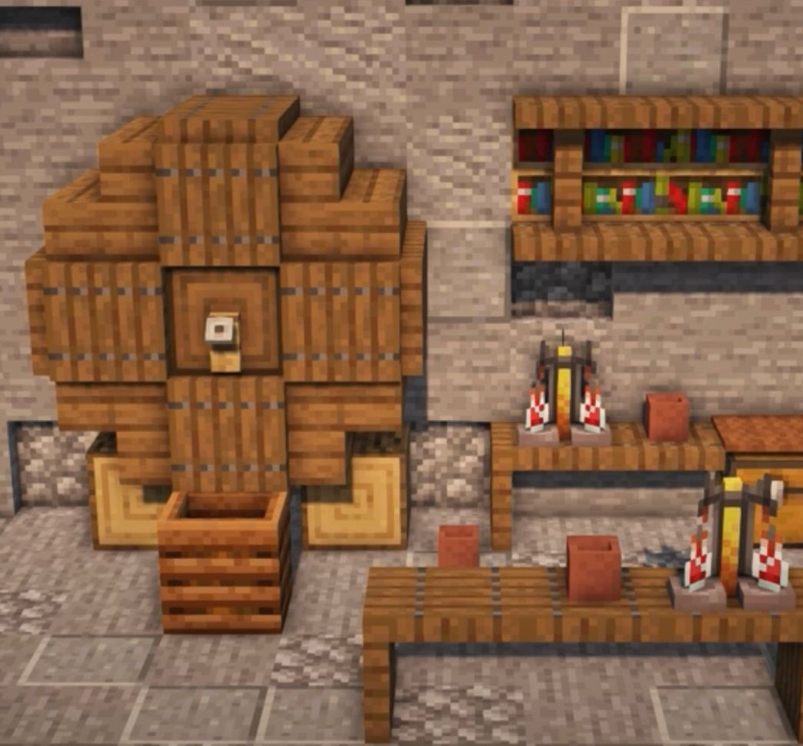

¿Qué es la alquimia en Minecraft?
La alquimia en Minecraft es una habilidad que te permite crear objetos a partir de otros materiales. Para crear una mesa de alquimia, necesitas obsidiana y diamantes.
La alquimia en Minecraft es un sistema de elaboración que permite a los jugadores crear pociones y otros objetos útiles mediante la combinación de diferentes ingredientes. La alquimia se realiza en una mesa de pociones, que es una estructura que se puede construir utilizando bloques de obsidiana y cristales de blaze. Para crear pociones, el jugador debe recolectar ingredientes, que se pueden encontrar en diferentes lugares del juego, como cuevas, bosques y biomas de la selva. Algunos ingredientes comunes incluyen la hierba alta, la raíz de oro, el ojo de araña y la lágrima de ghast. Cada ingrediente tiene propiedades únicas que pueden otorgar diferentes efectos a las pociones. Por ejemplo, la hierba alta se puede utilizar para crear pociones de velocidad, mientras que el ojo de araña se utiliza para crear pociones de veneno. Una vez que se tienen los ingredientes, el jugador debe colocarlos en la mesa de pociones en la combinación correcta para crear la poción deseada. Cada poción tiene una duración limitada y se puede almacenar en botellas de cristal para su uso posterior. La alquimia también se puede utilizar para crear otros objetos útiles, como los fuegos artificiales y las flechas de fuego. Además, los libros de alquimia se pueden encontrar en cofres o comprados a los bibliotecarios del juego, los cuales contienen información sobre la elaboración de pociones y otros objetos.
